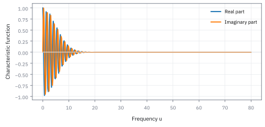
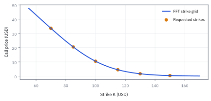
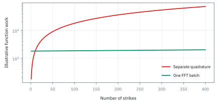
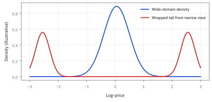
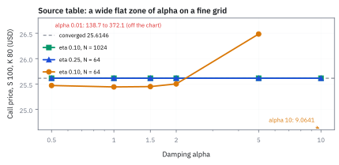

21.3 Fourier and FFT Pricing
ใช้ characteristic function และ Carr–Madan transform สร้างราคา option หลาย strike ในรอบเดียว
Call option บนหุ้น \$100 มี strike \$100 อายุ 1 ปี อัตรา 5% volatility 20% หากใช้ Carr–Madan แปลง Fourier ด้วย damping 1.5 ราคาที่ได้จะตรงกับ Black–Scholes ที่ \$10.4506 หรือไม่?
เฉลย: ตรงกันที่ \$10.4506 โดย Carr–Madan อินทิเกรต characteristic function บนแกนความถี่ครั้งเดียว และขยายเป็นทั้ง strike ladder ได้ด้วย Fast Fourier Transform (FFT)
ศัพท์จากโลกความถี่
- characteristic function
- ค่าเฉลี่ยของ exponential เชิงซ้อนของ log-price ใช้เก็บข้อมูล distribution ในรูปที่หลาย model คำนวณได้ตรงแม้ density ไม่มีสูตรง่าย
- Fourier transform
- การแปลง function จากราคาไปเป็นความถี่ ใช้เปลี่ยน expectation ที่ยากให้เป็น integral ที่ควบคุมได้
- inverse Fourier transform
- การแปลงข้อมูลความถี่กลับเป็นราคา หรือ density ใช้กู้ตัวเลขที่ trader ต้องการจาก characteristic function
- damping
- การคูณ payoff ด้วย exponential เพื่อทำให้ transform ลู่เข้า ใช้จัดการ call payoff ที่โตไม่สิ้นสุด
- Carr–Madan transform
- สูตรที่ใช้ damping กับ characteristic function แล้ว invert Fourier ใช้สร้างราคาหลาย strike ด้วย FFT
- aliasing
- ความผิดพลาดเมื่อกริดแคบจนหางของข้อมูลพับกลับเข้ามา ใช้เตือนว่าค่าที่เร็วอาจผิดอย่างมีระเบียบ
- quadrature
- การแทน integral ด้วยผลรวมถ่วงน้ำหนัก ใช้เป็น benchmark ของ FFT ที่ strike เดี่ยว
สัญลักษณ์และหน่วย
| สัญลักษณ์ | ความหมาย | หน่วย |
|---|---|---|
| $X_T=\log S_T$ | log-price ที่ expiry | ไม่มีหน่วย |
| $\phi_T(u)$ | characteristic function ของ $X_T$ | ไม่มีหน่วย |
| $u,k$ | Fourier frequency และ log-strike | ไม่มีหน่วย |
| $K,C(K,T)$ | strike และราคา European call | USD ต่อหน่วย underlying |
| $\alpha$ | damping parameter | ไม่มีหน่วย |
| $N,\eta$ | จำนวนจุด FFT และ frequency spacing | ไม่มีหน่วย |
| $\lambda,b$ | log-strike spacing และครึ่งช่วงกริด | ไม่มีหน่วย |
ที่มาทางประวัติศาสตร์: จากสอง integral ของ Heston สู่ batch FFT ของ Carr–Madan
ก่อนปี 1999 วิธีตั้งราคา option ด้วย Fourier transform ในการเงินยังแยกเป็นสองส่วน Steven Heston (1993) สร้างแบบจำลอง stochastic volatility โดยเลียนแบบโครงสร้างของ Black–Scholes ที่มีพจน์ P1 และ P2 ซึ่งต้องคำนวณ numerical integral ในแกนความถี่แยกกันสองรอบสำหรับแต่ละ strike
หากในตลาดมี 50 strike วิศวกรการเงินต้องคำนวณ numerical integral ถึง 100 ครั้งในทุกรอบที่ optimizer ขยับ parameter ยิ่งกว่านั้น แบบจำลองดั้งเดิมของ Heston ประสบปัญหาการข้าม branch-cut ของ complex logarithm ทำให้ค่า integral กระโดดอย่างควบคุมไม่ได้
Peter Carr และ Dilip Madan (1999) เปลี่ยนกระบวนทัศน์นี้ในบทความวิชาการ โดยตั้งคำถามใหม่ว่า แทนที่จะหา integral แยกตามแต่ละ strike ทำไมเราไม่มองราคา option ทั้งหมดเป็น function ของ log-strike k แล้วแปลง Fourier เพียงครั้งเดียว
Carr และ Madan ค้นพบว่าเมื่อคูณราคาด้วย exponential damping factor $e^{\alpha k}$ จะทำให้ function สลายตัวเป็นศูนย์ที่ปลายทั้งสองข้างและหา Fourier transform ได้ในรูปปิด จากนั้นนำมาเชื่อมกับ Fast Fourier Transform (FFT) ทำให้ได้ราคา option พร้อมกัน N strike ด้วยต้นทุน O(N log N)
ที่มาที่ไป: ทางลัดที่ยืมมาจากงานประมวลผลสัญญาณ
แบบจำลองอย่าง Heston ไม่มีสูตรราคาปิด แต่มีสูตรของอีกสิ่งหนึ่งที่เรียกว่า characteristic function ซึ่งเป็นการมองการกระจายตัวในโลกของความถี่แทนที่จะเป็นโลกของค่า
Peter Carr กับ Dilip Madan แสดงในปี 1999 ว่าเราแปลงจากโลกนั้นกลับมาเป็นราคาได้ ด้วยเครื่องมือที่วงการประมวลผลสัญญาณใช้กันมานาน
ข้อได้เปรียบที่ทำให้วิธีนี้ชนะคือมันคำนวณราคาของ strike ทั้งแถวได้ในครั้งเดียว แทนที่จะคำนวณทีละตัว ซึ่งเร็วกว่าหลายสิบเท่า
และความเร็วนั้นสำคัญมาก เพราะการปรับเทียบต้องคำนวณราคาซ้ำเป็นพันครั้ง
option สองแบบบนหุ้น Apple ที่ \$190: คนเก็งกำไร
| ราคาหุ้นตอนจบ | ซื้อหุ้น 100 หุ้น (USD) | ซื้อ call strike 200 ค่า premium 500 (USD) |
|---|---|---|
| 140 | −5,000 | −500 |
| 170 | −2,000 | −500 |
| 190 | 0 | −500 |
| 210 | +2,000 | 1,000 − 500 = +500 |
| 240 | +5,000 | 4,000 − 500 = +3,500 |
ซื้อหุ้น 100 หุ้นใช้เงิน \$19,000 ซื้อ call อายุ 3 เดือนจ่ายแค่ \$5 ต่อหุ้นหรือ \$500 ขาดทุนมากสุดของ call คือ 500 เท่านั้น แต่กำไรขาขึ้นก็น้อยกว่า และคนเก็งกำไรไม่ต้องถือถึงวันหมดอายุ ขายสัญญาทิ้งก่อนได้
option สองแบบบนหุ้น Apple ที่ \$190: คนป้องกันความเสี่ยง
| ราคาหุ้นตอนจบ | ถือหุ้นเฉย ๆ (USD) | ถือหุ้นและซื้อ put strike 180 ค่า premium 800 (USD) |
|---|---|---|
| 130 | 13,000 | 13,000 + 5,000 − 800 = 17,200 |
| 160 | 16,000 | 16,000 + 2,000 − 800 = 17,200 |
| 190 | 19,000 | 19,000 − 800 = 18,200 |
| 220 | 22,000 | 22,000 − 800 = 21,200 |
| 250 | 25,000 | 25,000 − 800 = 24,200 |
put อายุ 6 เดือนราคา \$8 ต่อหุ้นทำให้พอร์ตไม่ต่ำกว่า \$17,200 ไม่ว่าหุ้นจะตกแค่ไหน ราคาที่จ่ายคือ \$800 ที่หายไปในกรณีหุ้นไม่ตก คำถามที่เหลือคือ 5 และ \$8 นั้นยุติธรรมหรือไม่ ซึ่งคือเรื่องของหัวข้อนี้
ราคาวันนี้คือ payoff ถ่วงด้วย density แล้วคิดลด
สัญญากำหนดราคาวันนี้ $S_0$ strike $K$ และวันหมดอายุ $T$ ส่วนราคาตอนจบ $S_T$ ยังไม่รู้ ถ้ารู้ density ของ $S_T$ ภายใต้ risk-neutral measure การตั้งราคาคือการเฉลี่ย payoff แล้วคิดลดกลับมา
$(S_T-K)^+$ คือ payoff ของ call ที่เป็นศูนย์เมื่อหุ้นจบต่ำกว่า strike ช่วงที่ต่ำกว่า $K$ จึงไม่มีอะไรให้บวก integral เริ่มที่ $K$ ได้เลย put กลับกัน จ่ายเฉพาะช่วงศูนย์ถึง $K$
ภาพของมันคือพื้นที่ใต้เส้นที่ได้จากการคูณ payoff รูปไม้ฮอกกี้กับ density ของราคาตอนจบ แล้วย่อด้วย $e^{-rT}$ เพื่อคิดเป็นเงินวันนี้
ลองกับ lognormal: บวกแท่งสี่เหลี่ยม 4,096 แท่ง
หุ้น \$100 strike 80 ดอกเบี้ย 5% dividend yield 1% volatility 30% อายุหนึ่งปี ใช้ density ของ Black–Scholes ช่องละ \$0.20 จำนวน 4,096 ช่อง
$z$ คือระยะของ log ราคาจากค่าเฉลี่ย $m$ วัดเป็นจำนวน standard deviation ส่วน 0.0050 มาจาก 0.05 − 0.01 − 0.045
แทน integral ด้วยแท่งสี่เหลี่ยมกว้าง 0.20 แท่งแรกอยู่ที่ strike พอดีจึงนับครึ่งแท่งตามกฎสี่เหลี่ยมคางหมู แท่งสุดท้ายอยู่ที่ราว \$899 ซึ่งไกลพอที่ density แทบเป็นศูนย์ งานทั้งหมดคือบวก 4,096 ครั้ง สำหรับ put ขอบบนคือ strike เอง จึงตั้ง $\eta=K/N$ และ $s_j=(j-1)\eta$ แทน
ผล \$25.6146 ตรงกับสูตร Black–Scholes ที่มี dividend ถึงสี่ตำแหน่ง วิธีนี้แม่นและตรงไปตรงมา ปัญหาเดียวคือ model ส่วนใหญ่ เช่น Heston ไม่มีสูตรของ density ให้แทน นี่คือเหตุผลที่ต้องย้ายไปโลกความถี่ในส่วนถัดไป
ทำไม log-price จึงเดินทางไปโลกความถี่ได้
ราคา option คือ expected payoff ที่ discount แล้ว แต่ payoff call มีส่วนบวกของ $S_T-K$ และ density ของ stochastic-volatility หรือ jump model อาจเขียนยาก หลาย model กลับมี characteristic function ของ log-price ที่คำนวณได้ตรง จึงย้ายงานจาก density ที่มองไม่เห็นไปยัง function เชิงซ้อนที่ทดสอบได้
ความถี่ $u$ ไม่ใช่เวลาและไม่ใช่ราคา ให้คิดว่าเป็นความละเอียดของเลนส์: ความถี่ต่ำเก็บรูปใหญ่ ความถี่สูงเก็บรายละเอียดแหลม เรารวมข้อมูลทุกความถี่ผ่าน inverse transform เพื่อได้ราคา ณ log-strike ที่ desk ต้องการ
ลอง distribution สองค่าก่อนมองคลื่น
ให้ X มีค่าได้เพียงศูนย์หรือหนึ่งอย่างละครึ่ง characteristic function คือค่าเฉลี่ยของจุดบนวงกลมที่หมุนด้วยมุม u คูณ X หน่วยจินตภาพ i เก็บแกนตั้ง ส่วนจริงเก็บแกนนอน
เมื่อ u เป็นศูนย์ทุกจุดอยู่ที่หนึ่ง ค่าเฉลี่ยจึงเป็นหนึ่ง เมื่อ u เป็น pi จุดทั้งคู่อยู่คนละฝั่งพอดีจึงหักล้างเป็นศูนย์ ค่าศูนย์นี้ไม่ใช่โอกาสศูนย์ แต่เป็นผลรวมของทิศตรงข้าม ข้อมูลจากทุก u ร่วมกันจึงอธิบาย distribution ได้
ขั้นที่ 1 — นิยามของ characteristic function
บรรทัดนี้เป็น นิยาม ของเครื่องมือที่จะใช้ ไม่ใช่ผลที่พิสูจน์ รูปของมันเหมือน Moment Generating Function ในหัวข้อ 7.2 ทุกอย่าง ต่างแค่เปลี่ยนตัวคูณในเลขชี้กำลังเป็นจำนวนจินตภาพ ข้อดีของการเปลี่ยนนั้นคือมันมีค่าจำกัดเสมอ ต่างจากเครื่องมือเดิมที่บาง distribution ไม่มี ซึ่งเป็นข้อจำกัดที่หัวข้อ 7.2 เตือนไว้ ราคาที่จ่ายคือต้องทำงานกับจำนวนเชิงซ้อน
Q คือ risk-neutral measure, $X_T$ ไม่มีหน่วย และ $\phi_T(0)=1$ เป็น sanity check แรกของ implementation
ขั้นที่ 2 — ของที่ให้มา: รูปสำหรับกรณีที่รู้คำตอบอยู่แล้ว ใช้ตรวจโค้ด
บรรทัดนี้เป็น ของที่ให้มา ซึ่งได้จากการแทน $iu$ แทน $t$ ในผลของหัวข้อ 7.2 ที่คำนวณ Moment Generating Function ของระฆังไว้แล้วด้วย integral เลขชี้กำลังจึงมีสองก้อน ก้อนแรกเป็นจินตภาพล้วนมาจากจุดกลาง ก้อนที่สองเป็นจริงและติดลบ มาจากกำลังสองของจำนวนจินตภาพ ประโยชน์หลักของบรรทัดนี้ไม่ใช่การตั้งราคา แต่คือการตรวจโค้ด เพราะกรณีนี้มีสูตรปิดจากหัวข้อ 14.2 อยู่แล้ว ถ้าสองทางไม่ตรงกัน แปลว่าโค้ดผิด
$S_0,K$ เป็น USD ต่อหน่วย, $r,q$ ต่อปี, $\sigma$ ต่อรากปี และ $T$ ปี; exponent ไม่มีหน่วยจึงต้องใช้เวลาให้สอดคล้อง
การพิสูจน์ Characteristic Function ของ Black–Scholes ด้วยการจัดกำลังสองสมบูรณ์
นี่คือรากฐานที่มาของ characteristic function สำหรับ Black–Scholes ที่ไม่ได้หยิบยกมาลอย ๆ แต่มาจากการจัดรูปกำลังสองสมบูรณ์ใน Gaussian integral โดยตรง
สังเกตว่าพจน์จินตภาพ $iu\mu_T$ ทำหน้าที่เป็นตัวหมุนเฟสของคลื่นตามค่าเฉลี่ยของ log-price ขณะที่พจน์จริง $-\frac{1}{2}\sigma^2 u^2 T$ ทำหน้าที่ลดทอนความสูงของคลื่น ยิ่งความผันผวนหรือเวลาสูง คลื่นยิ่งสลายตัวเร็วในแกนความถี่
เขียน log-price $X_T$ ให้อยู่ในรูปตัวแปร standard normal $Z$ จากนั้นกระจายค่า expected value เป็น integral เทียบ probability density ของ normal distribution
รวมเลขชี้กำลังของก้อน exponential เข้าด้วยกัน แล้วจัดรูปกำลังสองสมบูรณ์ในตัวแปร $z$ โดยบวกและลบพจน์กำลังสองของ $iu\sigma\sqrt{T}$
ดึงพจน์คงที่ซึ่งไม่มี $z$ ออกมานอก integral ตัว integral ที่เหลืออยู่เป็นการหาพื้นที่ของ normal density ที่เลื่อนจุดศูนย์กลาง ซึ่งมีค่าเท่ากับหนึ่งเสมอ
พจน์ที่ดึงออกมาคือกำลังสองของจำนวนจินตภาพ ซึ่งเปลี่ยนเครื่องหมายเป็นลบ เกิดเป็นพจน์ลดทอน $-\frac{1}{2}\sigma^2 u^2 T$ ที่ทำให้คลื่นสลายตัวอย่างรวดเร็วที่ความถี่สูง
แล้วเอาไปใช้ทำอะไรได้จริงบ้าง
การตั้งราคาผ่านการแปลงเชิงความถี่ ทำให้คำนวณราคาหลาย strike พร้อมกันได้เร็วมาก
ใช้กับแบบจำลองที่ไม่มีสูตรราคาปิด แต่มีสูตรของ characteristic function เช่น Heston
ใช้คำนวณราคาทั้งแถว strike ในครั้งเดียว ซึ่งเร็วกว่าคำนวณทีละตัวหลายสิบเท่า
ใช้ในการปรับแบบจำลองให้ตรงตลาด ที่ต้องคำนวณราคาซ้ำเป็นพันครั้ง
Figure 21.3a — distribution ปรากฏเป็นคลื่นเชิงซ้อน

ส่วนจริงและส่วนจินตภาพของ Black–Scholes characteristic function ลดขนาดเมื่อความถี่สูงขึ้น ความสั่นเป็นภาษาของ distribution ไม่ใช่การทำนายว่าหุ้นจะสั่น; cutoff ต้องไกลพอให้หางที่ตัดทิ้งเล็กตาม tolerance
damping คือเงื่อนไขเข้าประตู
call price ตาม log-strike แปลง Fourier ตรง ๆ ไม่สะดวก เพราะราคา call ไม่เข้าใกล้ศูนย์เมื่อ log-strike ลดไปลบอนันต์ Carr–Madan จึงคูณราคาด้วย exponential damping ให้ transform ลู่เข้า แล้วหัก damping หลัง inverse transform
ค่า $\alpha$ เป็น contract ของ model กับ algorithm: ต้องมากพอให้ integral ลู่เข้า แต่ไม่ใหญ่จนเรียก moment ที่ jump model ไม่มี เก็บ $\alpha$, cutoff, $N$, spacing และ integration rule คู่กับทุก price; ไม่เช่นนั้นผลจาก run สองครั้งอาจเทียบกันไม่ได้
ที่มาของตัวหารใน Carr–Madan
ตรึง log ราคาปลายทางไว้ที่ x ก่อน call จ่ายเฉพาะ log strike k ที่ต่ำกว่า x จึงรวมจากลบอนันต์ถึง x แยก payoff เป็น exponential สองพจน์ แล้ว integrate ทีละพจน์ได้ตัวหาร z กับ z บวกหนึ่ง
ลบพจน์ที่มีตัวเศษเท่ากันจะได้ผลคูณ z กับ z บวกหนึ่ง จากนั้นค่อยเฉลี่ยเหนือราคาปลายทางและคิดลด จะได้ characteristic function ที่เลื่อน input เข้าแกนจินตภาพตามสูตร
เงื่อนไขคือ alpha เป็นบวกและ moment ของราคากำลัง alpha บวกหนึ่งมีค่าจำกัด จึงสลับลำดับการเฉลี่ยกับ integral ได้ damping ทำให้ราคาที่ไม่หายไปเมื่อ strike เข้าใกล้ศูนย์ถูกลดลงในแกน log strike พร้อมกับต้องตรวจหางขวาผ่าน moment
ขั้นที่ 3 — ของที่ให้มา: การแปลงที่ทำให้ integral ลู่เข้า
สองก้อนนี้เป็น ของที่ให้มา จากทฤษฎีการแปลง ไม่ได้พิสูจน์ที่นี่ แต่เหตุผลของรูปอ่านได้: ราคา call ไม่ลู่เข้าเมื่อ strike เข้าใกล้ศูนย์ การคูณด้วยตัวลดที่มีตัวแปรช่วยจึงจำเป็น เพื่อให้แปลงกลับได้ ตัวช่วยนั้นต้องเป็นบวกและไม่ใหญ่เกินไป ไม่งั้น integral จะระเบิดอีกทาง ตัวส่วนในบรรทัดแรกมาจากการอินทิเกรตสองชั้นของ payoff ที่เป็นเส้นหักมุม และบรรทัดที่สองคือการแปลงกลับ ซึ่งเป็นสิ่งที่ขั้นถัดไปจะคำนวณด้วยเครื่อง
$C$ เป็น USD ต่อหน่วย, $k=\log K$ ไม่มีหน่วย และ $\Re$ คือส่วนจริงของจำนวนเชิงซ้อน; damping ต้องอยู่ใน domain ของ moment
การลดรูป Inverse Fourier Transform จากเส้นจริงทั้งเส้นสู่ครึ่งแกนบวก
เหตุผลที่สูตร Carr–Madan อินทิเกรตเฉพาะแกนบวกตั้งแต่ศูนย์ถึงอนันต์ ไม่ใช่เพราะละเลยซีกซ้าย แต่เป็นเพราะราคา option ในโลกความจริงเป็นจำนวนจริง
สมบัติความสมมาตรแบบ conjugate symmetry ทำให้ครึ่งซ้ายและครึ่งขวาให้ข้อมูลเหมือนกันทุกประการ การรวมกันจึงทำให้ส่วนจินตภาพหายไปเหลือเพียงสองเท่าของส่วนจริง ช่วยประหยัดเวลาคำนวณครึ่งหนึ่งทันที
แยก integral บนแกนจริงออกเป็นสองช่วง คือตั้งแต่ลบอนันต์ถึงศูนย์ และตั้งแต่ศูนย์ถึงอนันต์
เปลี่ยนตัวแปรในท่อนลบอนันต์ให้กลายเป็นตัวแปรบวก เนื่องจากราคา option เป็นจำนวนจริง characteristic function จะมีสมบัติสมมาตรแบบ complex conjugate
ผลรวมของจำนวนเชิงซ้อนกับ complex conjugate ของตัวมันเอง จะได้สองเท่าของส่วนจริงเสมอ ส่วนจินตภาพจะหักล้างกันจนหมดสิ้น
เลขสองที่ได้จากการรวมส่วนจริง ตัดกับเลขสองที่ตัวส่วน $2\pi$ พอดี ทำให้เหลือเพียงตัวหาร $\pi$ และคำนวณ integral เพียงครึ่งแกนบวกตั้งแต่ศูนย์ถึงอนันต์
ขั้นที่ 4 — เลข benchmark ของ call หนึ่งตัว
ตัวอย่างกำหนด spot และ strike \$100, อายุหนึ่งปี, อัตรา 5% ต่อปี, volatility 20% ต่อรากปี และ damping 1.5
ทุกจำนวนราคามีหน่วย USD ต่อหน่วยสัญญา; Carr–Madan trapezoid integral ด้วย cutoff 200 และ 16,384 จุดควรคืน call price ภายในราว \$0.0001
คำตอบ — ราคา Call Option ด้วย Carr–Madan
คำถาม: Call option บนหุ้น \$100 มี strike \$100 อายุ 1 ปี อัตรา 5% volatility 20% หากใช้ Carr–Madan แปลง Fourier ด้วย damping 1.5 ราคาที่ได้จะตรงกับ Black–Scholes ที่ \$10.4506 หรือไม่?
ของที่มี (ขั้นที่ 1 ถึง 4): spot \$100, strike \$100, อัตรา 5%, volatility 20%, damping 1.5 และ characteristic function ของ Black–Scholes
1 คำนวณราคาปิด Black–Scholes: ได้ d1 = 0.35, d2 = 0.15 และราคา call เท่ากับ \$10.4506 ต่อหุ้น
2 อินทิเกรตด้วย Carr–Madan บนแกนความถี่: ได้ราคา call เท่ากับ \$10.4506 ต่อหุ้น ตรงกับสูตรปิด
3 สำหรับสัญญามาตรฐาน 100 หุ้น: มูลค่าสัญญาเท่ากับ \$1,045.06
ตรวจเองใน 10 วินาที: ขอบเขตล่าง \$4.8771 น้อยกว่าราคา call \$10.4506 ซึ่งน้อยกว่า spot \$100 ถูกต้องตาม no-arbitrage bounds
แปลว่าอะไร: Carr–Madan ให้ราคาเดียวกับสูตรปิดเมื่อทดสอบบน Black–Scholes จึงนำไปใช้กับ model อย่าง Heston ได้อย่างมั่นใจ
โค้ดตรวจราคา Call Option ด้วย Black–Scholes และ Carr–Madan
import numpy as np
from scipy.stats import norm
from scipy.integrate import quad
S0, K, T, r, q, sigma, alpha = 100.0, 100.0, 1.0, 0.05, 0.0, 0.20, 1.5
d1 = (np.log(S0 / K) + (r - q + 0.5 * sigma**2) * T) / (sigma * np.sqrt(T))
d2 = d1 - sigma * np.sqrt(T)
bs_call = S0 * np.exp(-q * T) * norm.cdf(d1) - K * np.exp(-r * T) * norm.cdf(d2)
assert abs(bs_call - 10.4506) < 1e-4
def phi(u):
mu = np.log(S0) + (r - q - 0.5 * sigma**2) * T
return np.exp(1j * u * mu - 0.5 * sigma**2 * u**2 * T)
def psi(u):
denom = (alpha + 1j * u) * (alpha + 1.0 + 1j * u)
return np.exp(-r * T) * phi(u - (alpha + 1.0) * 1j) / denom
k = np.log(K)
def integrand(u):
return np.real(np.exp(-1j * u * k) * psi(u))
val, _ = quad(integrand, 0, 100)
carr_madan_call = np.exp(-alpha * k) / np.pi * val
assert abs(carr_madan_call - bs_call) < 1e-4
S0, K, r, q, T, sig = 100.0, 80.0, 0.05, 0.01, 1.0, 0.30 # source examples, K 80
m = np.log(S0) + (r - q - 0.5 * sig**2) * T
s = K + 0.20 * np.arange(4096) # direct quadrature
f = np.exp(-(np.log(s) - m)**2 / (2 * sig**2 * T)) / (s * sig * np.sqrt(2 * np.pi * T))
w = np.full(4096, 0.20); w[0] = 0.10
assert abs(np.exp(-r * T) * np.sum((s - K) * f * w) - 25.6146) < 1e-4
def cm(phi, a=1.5, eta=0.25, N=4096): # one strike, trapezoid
u = np.arange(N) * eta; wt = np.full(N, eta); wt[0] = eta / 2; k = np.log(K)
ps = np.exp(-r * T) * phi(u - (a + 1) * 1j) / ((a + 1j * u) * (a + 1 + 1j * u))
return np.exp(-a * k) / np.pi * np.sum(np.real(np.exp(-1j * u * k) * ps * wt))
assert abs(cm(lambda u: np.exp(1j * u * m - 0.5 * sig**2 * u**2 * T)) - 25.6146) < 1e-4
nu, th = 0.5, -0.4 # Variance Gamma
om = np.log(1 - th * nu - 0.5 * sig**2 * nu) / nu
vg = lambda u: np.exp(1j * u * (np.log(S0) + (r - q + om) * T)) / (1 - 1j * u * th * nu + 0.5 * sig**2 * nu * u**2)**(T / nu)
assert abs(om - 0.3268) < 1e-4 and abs(cm(vg) - 28.2203) < 1e-4
def heston(qq, kap=2.0, tv=0.05, sv=0.3, rho=-0.7, v0=0.04):
def phi(u):
g = np.sqrt(sv**2 * (u**2 + 1j * u) + (kap - 1j * rho * sv * u)**2); c = kap - 1j * rho * sv * u
num = np.exp(1j * u * np.log(S0) + 1j * u * (r - qq) * T + kap * tv * T * c / sv**2)
den = (np.cosh(g * T / 2) + c / g * np.sinh(g * T / 2))**(2 * kap * tv / sv**2)
return num / den * np.exp(-(u**2 + 1j * u) * v0 / (g / np.tanh(g * T / 2) + c))
return phi
assert abs(cm(heston(0.01)) - 24.3325) < 1e-4 and abs(cm(heston(0.0)) - 25.2428) < 1e-4
lam = 2 * np.pi / (4096 * 0.25); b1 = 4096 * lam / 2 - np.log(100) # strike-grid centring
assert abs(lam - 0.006136) < 1e-6 and abs(-b1 + 2048 * lam - np.log(100)) < 1e-12
assert abs(80 * np.exp(lam) - 80.49) < 0.01
assert abs(carr_madan_call - 10.4506) < 1e-4สคริปต์คำนวณราคา Black–Scholes และอินทิเกรต Carr–Madan ผ่าน characteristic function ยืนยันว่าผลลัพธ์ตรงกันที่ \$10.4506
ตารางต้นทาง: damping กับขนาดกริดบนสัญญาเดียวกัน
เอกสารต้นทางลองโค้ด FFT ชุดเดียวกับ call อายุหนึ่งปี หุ้น \$100 strike \$80 ดอกเบี้ย 5% dividend yield 1% แล้วเปลี่ยนค่า damping ขนาดช่องความถี่ และจำนวนจุดทีละตัว
Black–Scholes ที่ volatility 30% ลู่เข้าที่ \$25.6146 บนกริด 1,024 จุดทุกค่า damping ตั้งแต่ 0.5 ถึง 10 ส่วนกริด 64 จุดที่ช่อง 0.10 เพี้ยนทุกค่า และพังเหลือ 9.0641 ที่ damping 10 เพราะ aliasing
ถ้า damping น้อยเกินไป เช่น 0.01 ราคาระเบิดเป็น 138.7 ถึง \$372.1 เพราะตัวหารในสูตรเข้าใกล้ศูนย์ที่ความถี่ต่ำ ช่วงที่ปลอดภัยในตารางคือ damping ราว 0.5 ถึง 2
สาม model หนึ่งโค้ด: Black–Scholes, Heston และ Variance Gamma
ข้อดีที่ใหญ่ที่สุดของวิธีนี้คือไม่ผูกกับ model ตัวไหน ขอแค่รู้ characteristic function เอกสารต้นทางลอง model ที่สามคือ Variance Gamma ที่ $\sigma=0.3$, $\nu=0.5$ และ $\theta_v=-0.4$
Variance Gamma คือ Brownian motion ที่เดินตามนาฬิกาสุ่ม $\gamma_t$ ซึ่งเป็น gamma process ที่เฉลี่ยวิ่งหนึ่งหน่วยต่อปีและมี variance ต่อปีเท่ากับ $\nu$ บางช่วงนาฬิกาเดินเร็ว ราคาจึงกระโดดได้ $\theta_v$ ที่ติดลบทำให้หางซ้ายหนา
$\omega$ คือตัวแก้ drift ให้ราคาหุ้นที่คิดลดแล้วเป็น martingale ถ้าลืมมัน ราคาจะไม่ใช่ 28.2203 เพราะ forward ของหุ้นผิด
ตาราง Heston ในเอกสารต้นทางใช้ $\kappa=2$, $\theta=0.05$, $\sigma_v=0.3$, $\rho=-0.7$, $v_0=0.04$ และให้ 25.2428 เราคำนวณซ้ำด้วยสองสูตรต่างกันได้ตรงกันที่ 24.3325 เมื่อใส่ dividend 1% ตามที่ตั้งไว้ และได้ 25.2428 พอดีเมื่อ dividend เป็นศูนย์ ตารางนั้นจึงน่าจะรันโดยลืม $q$
ข้อดีสองข้อ คือโค้ดเดียวใช้ได้ทุก model และได้ราคาทั้งแถวของ strike ในงาน $O(N\ln N)$ ข้อเสียสองข้อ คือ $\lambda\eta=2\pi/N$ ผูกความแม่นของ integral กับความถี่ของ strike และต้องเลือก $\alpha$, $N$, $\eta$ อย่างระวัง ไม่งั้นเจอ truncation, aliasing หรือจุด singular
ขั้นที่ 5 — นิยามของกริดสองอันที่ถูกผูกกันโดยบังคับ
สี่ก้อนนี้เป็น นิยาม ของกริดที่เราเลือกใช้ ไม่ใช่ผลที่พิสูจน์ แต่ความสัมพันธ์ระหว่างสองกริดไม่ใช่ทางเลือก มันถูกบังคับโดยวิธีคำนวณ ที่ต้องการให้ระยะห่างของสองกริดคูณกันแล้วได้ค่าที่กำหนด ผลที่ตามมาคือข้อแลกเปลี่ยนที่หนีไม่พ้น: ถ้าอยากได้กริดความถี่ที่ละเอียด กริด strike จะห่าง และกลับกัน ทั้งที่จำนวนจุดเท่าเดิม ส่วนบรรทัดที่สามกับสี่จัดให้กริด strike วางสมมาตรรอบจุดที่สนใจ เพราะราคาที่ต้องการมักอยู่ใกล้ราคาปัจจุบัน
$j,v$ เป็น index, $N$ มักเป็นกำลังของสอง, และ $K_v=e^{k_v}$ กลับเป็น strike หน่วย USD ต่อหน่วย underlying
เลือก b: วางกริด strike ไว้ตรงไหน
กริด log-strike เริ่มที่ $-b$ แล้วเพิ่มทีละ $\lambda$ เอกสารต้นทางให้สองทางเลือก ลองกับกริด 4,096 จุด ช่องความถี่ 0.25
ทางแรกวางกริดให้ราคาหุ้นวันนี้อยู่กลางแถว จุดที่ 2,049 จึงเป็น strike 100 พอดี มีทั้ง strike ต่ำและสูงเท่า ๆ กัน เหมาะเมื่อต้องการทั้ง smile
ทางที่สองให้ strike แรกเป็นตัวที่สนใจพอดี เช่น 80 ไม่ต้อง interpolate ที่ strike นั้น แต่ strike ถัดไปห่างกันตาม $\lambda$ ที่ถูกบังคับ คือ 80.49 ไม่ใช่เลขกลม ๆ ที่ตลาดซื้อขาย
Figure 21.3b — หนึ่ง batch คืนราคาหลาย strike

เส้นคือ call ladder บน log-strike grid และจุดคือ strike ที่ desk อาจต้องการ ยิ่ง spacing หยาบ strike ที่คำนวณตรงยิ่งห่าง การ interpolate เพิ่มขั้นตอนที่ต้องผ่าน monotonicity และ convexity checks
เมื่อใด FFT คุ้มกว่า integral ทีละ strike
quadrature ที่ strike เดี่ยวต้องประเมิน integrand หลายจุดสำหรับทุก strike งานจึงโตตามจำนวน strike คูณจำนวนจุดความถี่ FFT ประเมิน characteristic function บนกริดเดียวแล้วใช้ต้นทุนแบบจำนวนจุดคูณ logarithm ของจำนวนจุดเพื่อคืนทั้ง ladder จึงคุ้มเมื่อ calibration ต้องทดลอง parameter ซ้ำและต้องการ smile ทั้งเส้น
แต่หากต้องการ strike เดียว quadrature อาจง่ายกว่าและให้ strike ตรงตามที่ขอ FFT ไม่ได้ชนะทุกงาน มันแลกความเร็ว batch กับความต้องการจัดการ grid และ interpolation อย่างมีวินัย
Figure 21.3c — งานต่อ strike เปลี่ยนเป็นงานต่อ batch

ภาพเชิงอธิบายเปรียบเทียบจำนวน function work integration ทีละ strike โตตามจำนวน strike ส่วน FFT มีต้นทุนตั้งต้นแล้วตอบ strike เพิ่มใน batch เดียว ตัวเลขเวลาแท้จริงขึ้นกับ model, cache และ hardware จึงต้อง benchmark บน production engine
ทำไมผลรวมเดียวเรียก FFT ได้
แทนกริดความถี่กับ log strike ลงใน exponential แล้วใช้ความสัมพันธ์ eta คูณ lambda เท่ากับสอง pi หาร N พจน์ที่ขึ้นกับ j อย่างเดียวเก็บใน x ได้ ส่วนพจน์ที่ขึ้นกับทั้ง j และ v ตรงกับ discrete Fourier transform แบบเครื่องหมายลบ
จึงเรียก FFT หนึ่งครั้งบน vector x เพื่อได้คำตอบทุก v แล้วเอาส่วนจริง ปลด damping และหาร pi อย่าเรียก inverse FFT โดยไม่เปลี่ยนเครื่องหมายและ normalization
ถ้าใช้ trapezoid บนช่วงปิดตั้งแต่ศูนย์ถึงความถี่สุดท้าย ให้น้ำหนักปลายทั้งสองเป็นครึ่งหนึ่ง ภาพกริดที่ใช้หางสุดท้ายเล็กมากอาจให้น้ำหนักปลายขวาเต็มโดยมองช่วงต่อถึงอนันต์ได้ แต่ต้องระบุ convention และตรวจ cutoff
ขั้นที่ 6 — นิยามของการแทน integral ด้วยผลรวมบนกริด
บรรทัดนี้เป็น การประมาณที่เรากำหนดขึ้น ไม่ใช่อัตลักษณ์ เราแทนพื้นที่ใต้เส้นด้วยผลรวมของแท่งสี่เหลี่ยมคางหมู ซึ่งเป็นเหตุผลที่จุดแรกได้น้ำหนักครึ่งเดียว คือมันเป็นขอบ ไม่ใช่จุดกลาง ความคลาดที่เหลือมาจากสองทาง ทางแรกคือการตัดปลายที่ความถี่สูงทิ้ง ทางที่สองคือความหยาบของกริด ทั้งสองต้องตรวจด้วยการเปลี่ยนจำนวนจุด แล้วดูว่าราคาขยับหรือไม่ ซึ่งเป็นการตรวจแบบเดียวกับที่หัวข้อ 13.8 ใช้
$w_j$ และ $\eta$ ไม่มีหน่วย, ผลรวมต้องใช้ grid convention เดียวกับ FFT library มิฉะนั้น strike จะเลื่อนโดยไม่เกิด exception
Figure 21.3d — aliasing พับหางกลับมา

สีน้ำเงินเป็น density สังเคราะห์บนโดเมนกว้าง สีแดงแสดงหางที่ถูก periodize กลับเข้ามาเมื่อ log-price domain แคบ หางที่ควรอยู่นอกช่วงจึงซ้อนใกล้ปลายและทำให้ราคา strike ไกลเพี้ยน การเพิ่ม $N$ อย่างเดียวไม่พอถ้าช่วง $b$ ยังแคบ
Figure 21.3e — ตารางต้นทางของ damping กับขนาดกริด

ตัวเลขจากตารางในเอกสารต้นทาง call ที่หุ้น 100 strike 80 volatility 30% ราคาที่ลู่เข้าคือ 25.6146 กริดละเอียด 1,024 จุดให้ค่านี้ทุก alpha ตั้งแต่ 0.5 ถึง 10 เส้นเขียวจึงทับเส้นน้ำเงินพอดี กริด 64 จุดที่ช่อง 0.10 เพี้ยนทุกค่า และพังเหลือ 9.0641 ที่ alpha 10 ส่วน alpha 0.01 ระเบิดเป็น 138.7 ถึง 372.1
controls ก่อนส่ง FFT price ให้ optimizer
| การทดสอบ | สิ่งที่จับได้ |
|---|---|
| $\phi(0)=1$ และ conjugacy | characteristic function หรือ complex branch ผิด |
| Black–Scholes benchmark | sign, discount หรือ grid convention ผิด |
| ขยับ $N$, $\eta$, $b$, cutoff | truncation และ aliasing |
| bounds / monotonicity / convexity | static arbitrage บน strike ladder |
| เปรียบ quadrature ที่เลือก | endpoint weight และ interpolation error |
เก็บ output ของทุก control คู่กับ parameter set; quote ที่ fit ดีแต่ engine ไม่ผ่าน benchmark ไม่ควรเข้าระบบ risk
กับดัก: เร็วขึ้นแล้วลืมว่าได้ approximation
อย่าสับสน characteristic function ภายใต้ real-world measure กับ risk-neutral measure ที่ใช้ตั้งราคา และอย่า reuse branch ของ complex logarithm โดยไม่ทดสอบ maturity และ parameter ทั้งช่วง Heston กับ jump model อาจมี moment explosion หรือ branch discontinuity ที่ทำให้ damping ใช้ไม่ได้
อย่าพบ negative price ที่ปลาย grid แล้ว clamp เป็นศูนย์ก่อน calibration optimizer จะเห็น objective ปลอมและอาจ fit error ที่เราใส่เอง FFT มีค่าเมื่อ grid convention, tolerance และ arbitrage controls เป็นส่วนของ application programming interface (API)
ข้อจำกัด: วิธีนี้สมมติอะไร และของจริงเป็นอย่างไร
| เรื่อง | วิธีนี้สมมติว่า | ของจริงเป็นอย่างไร | ผลที่ตามมาเวลาใช้งาน |
|---|---|---|---|
| การเลือก parameter ของวิธี | ค่าที่เลือกไม่สำคัญ | การเลือกผิดทำให้ผลเพี้ยนหรือระเบิด | ต้องปรับค่าเหล่านั้นตามแบบจำลองและช่วง strike ที่ใช้ |
| ความเสถียรเชิงตัวเลข | การคำนวณเสถียร | characteristic function มีปัญหาการเลือกกิ่งของ log | ผลลัพธ์กระโดดโดยไม่มีเหตุผล ต้องใช้สูตรรุ่นที่แก้ปัญหานี้แล้ว |
| ชนิดของสัญญา | ใช้ได้กับทุกสัญญา | ใช้ได้ดีกับสัญญามาตรฐานที่จ่ายตอนหมดอายุ | สัญญาที่ขึ้นกับเส้นทางต้องใช้วิธีอื่น |
แถวกลางเป็นบั๊กที่พบบ่อยที่สุดในการเขียนโค้ดวิธีนี้ และหาสาเหตุยากมาก
สิ่งที่ยังไม่ได้พูดถึง: recipe ที่ใช้จริง
ตอนนี้มี engine ที่สร้าง smile เร็วพอให้ optimizer เรียกซ้ำได้ แต่ production calibration เริ่มก่อน engine: ต้องรู้ว่า quote ใด bid, ask, mid, stale หรือ crossed ต้องกำหนด weights, bounds, initial sets และ definition ของ run ผ่าน หัวข้อสุดท้ายรวมทุกชิ้นเป็น recipe ที่ reproducible และ audit ได้
สรุปที่ใช้ได้จริง
- characteristic function ให้เส้นทางจาก distribution ของ log-price ไปสู่ราคา option โดยไม่ต้องเขียน density ตรง ๆ
- Carr–Madan damping ทำให้ call transform ได้ และ FFT แลก frequency grid กับ strike ladder เพื่อเร่ง calibration batch
- FFT ต้องผ่าน benchmark, grid convergence, bounds และ static-arbitrage checks ก่อนใช้ใน trading หรือ risk